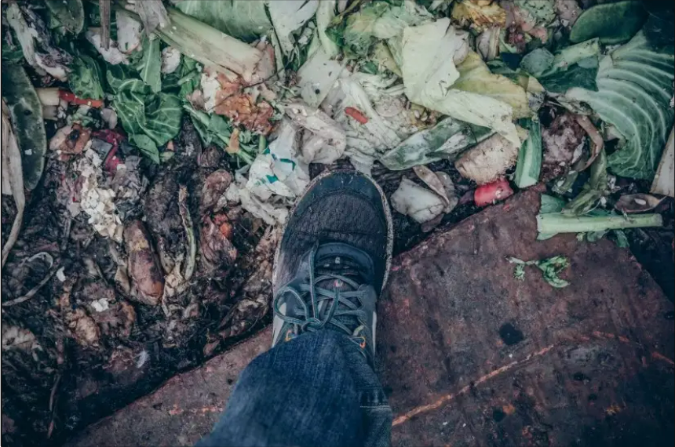
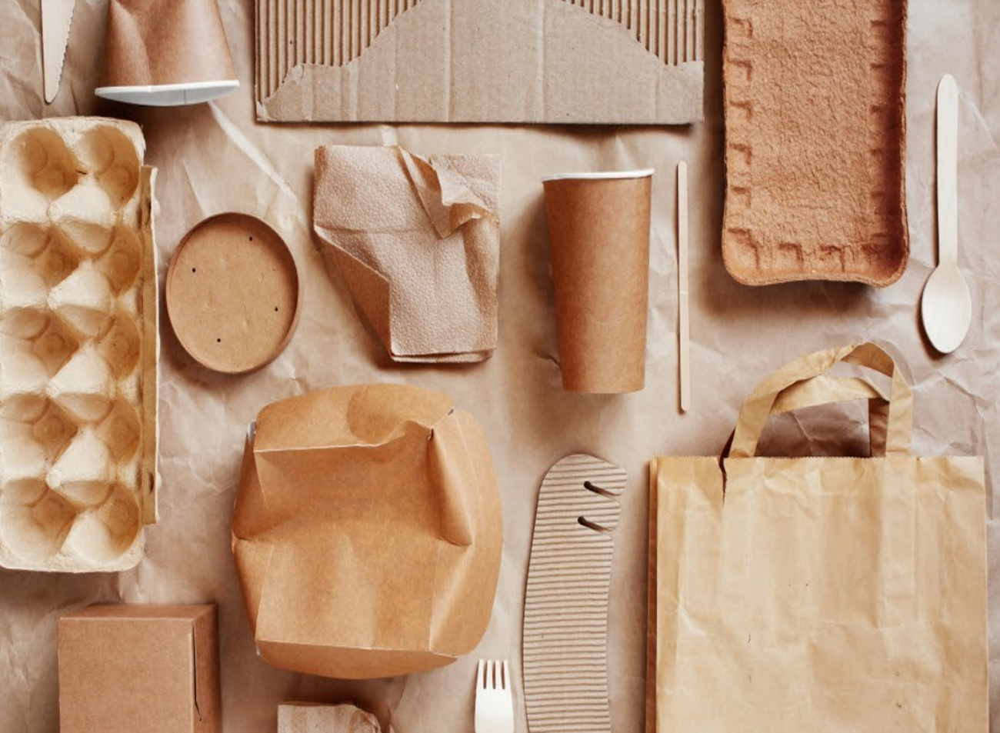
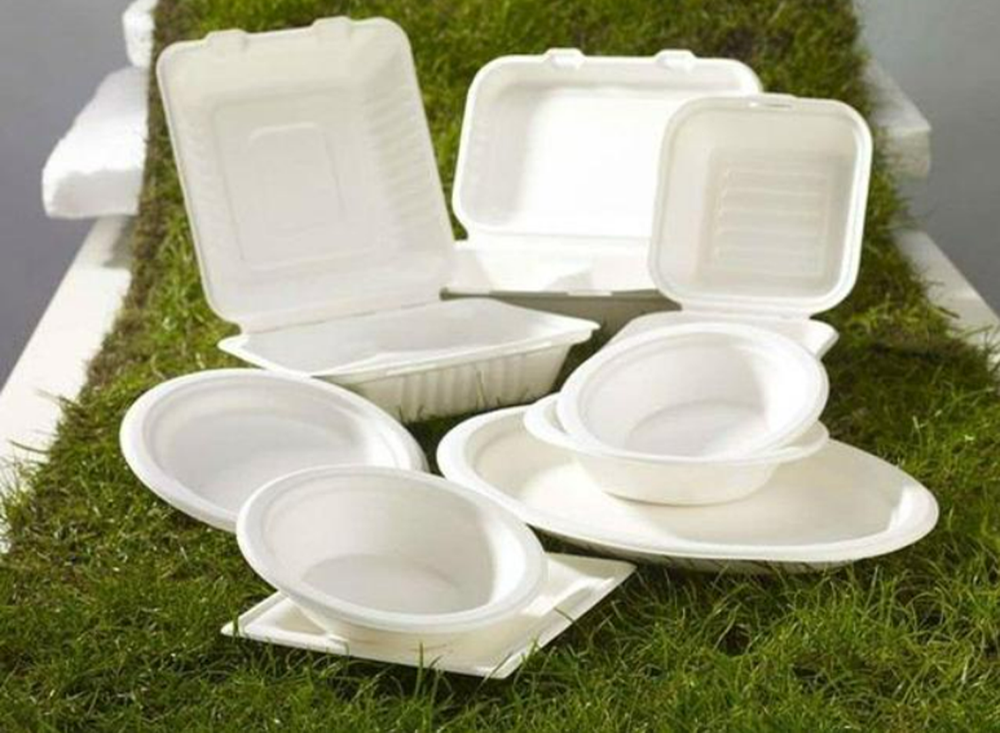

浪費後果
浪費的後果遠遠超越你的想像~
一次性餐具浪費
-
食物浪費足跡：對自然資源的影響
每年食物浪費造成的全部經濟、環境和社會成本約為 2.6 萬億美元，而森林毀滅亦是地球暖化元凶，科學家擔憂毀林和全球暖化攸戚相關，最終導致全球糧食危機。如果我們減少浪費，毀林需求將持續遞減。當然，毀林動機不一而足，但減少食物浪費必定舒緩毀林行為。浪費食物，就等同贊助森林、溼地、草原的摧毀。減少浪費，就是為阻止滅林盡一份心力。
 -
過度包裝：不僅污染環境,還污染人心
過度包裝使一些消費者盲目攀比，反過來商家瞅准了消費者心理，不斷升級包裝，生產更多華而不實的產品，導致惡性循環。一些經過特別包裝的商品，價格一般都是平常包裝的幾倍，甚至更高。但是，商品質量並沒有什麼兩樣，最終吃虧的還是消費者。再往大了看，“一流包裝，三流產品”，一個企業，不在“裡子”上講究，卻隻在“面子”上下功夫，也不利於國產品牌的成長。
 -
一次性餐具的危害、保護家人健康
一次性餐盒———含有大量工業碳酸鈣、石蠟
導致用熱水一泡、微波爐加熱甚至食品的溫度稍高一些，飯盒中所添加的化學物質就會和食物中所含的水、醋、油等相互溶解，隨食物進入人體內，從而引發消化不良、腹痛以及肝臟等方面的疾病。此外，工業碳酸鈣含有大量的重金屬———鉛，它對人體的消化道、神經系統也有很大的危害，尤其是兒童，處於發育期，攝入大量的鉛後，可能會對神經系統造成影響，比如出現多動症等情況。一次性筷子 ———二氧化硫侵襲呼吸道
人們用這種筷子進餐時，筷子遇熱會析出二氧化硫，這些會侵蝕呼吸道黏膜，咳嗽、哮喘等呼吸道疾病便隨之而來。除此以外，硫黃中含有鉛、汞等重金屬，重金屬在人體內部是可以堆積的，長時間的累積會造成鉛中毒或汞中毒。